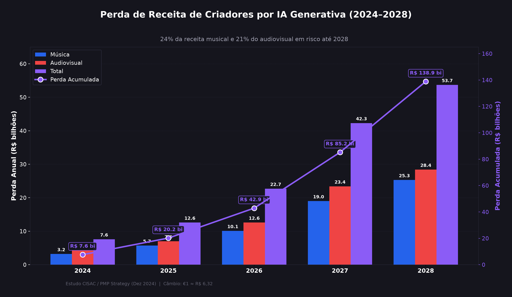

Produção:
A inteligência artificial permite produzir grandes quantidades de conteúdo em poucos segundos, aumentando a concorrência para artistas humanos.
Criatividade:
Modelos de IA aprendem padrões a partir de grandes conjuntos de dados, levantando debates sobre autoria, inspiração e originalidade.
Economia:
A expansão de conteúdos gerados por IA pode alterar a forma como artistas são contratados, remunerados e reconhecidos.
Valorização:
A pergunta que fica é, quem deve receber crédito quando uma obra é criada com auxílio de inteligência artificial?
A desvalorização de artistas ocorre quando o trabalho, a criatividade e a contribuição de profissionais da área artística deixam de receber o devido reconhecimento social, cultural ou financeiro.
Com o avanço das ferramentas de inteligência artificial capazes de gerar músicas, imagens, textos e outros conteúdos, surgem novos desafios para os artistas. A facilidade de produzir conteúdo artificialmente pode aumentar a concorrência e levantar discussões sobre autoria, remuneração, direitos autorais e reconhecimento.
O objetivo não é simplesmente colocar humanos contra a inteligência artificial, mas compreender como essa tecnologia está transformando a produção artística e quais impactos isso pode trazer para quem vive da própria criatividade.
Como a inteligência artificial generativa pode transformar a renda de artistas e criadores de conteúdo nos próximos anos.

Como podemos observar no gráfico acima, a inteligência artificial tem um impacto significativo na receita de criadores de conteúdo com o passar dos anos.
Fonte: Estudo CISAC/PMP Strategy divulgado pela Forbes Brasil.
Este projeto busca investigar como o crescimento da inteligência artificial generativa está modificando a produção artística, especialmente no setor musical. A partir de informações, exemplos e um quiz interativo, buscamos estimular uma reflexão sobre criatividade, autoria, reconhecimento e o espaço dos artistas em um cenário cada vez mais influenciado pela tecnologia.
A IA está transformando a produção artística e levantando questões sobre autoria, remuneração, originalidade e reconhecimento.
Apresentamos informações e exemplos sobre o uso da inteligência artificial na produção artística e, ao final, um quiz interativo para testar seus conhecimentos e sua percepção sobre o tema.
Estimular uma reflexão sobre os impactos da inteligência artificial na arte, destacando a criatividade, a autoria e a importância da valorização dos artistas.
Você consegue identificar se um áudio foi criado por um artista humano ou por uma Inteligência Artificial?
Você acertou 0 de 6 perguntas.
A inteligência artificial está transformando a maneira como músicas, imagens e outros conteúdos são produzidos. Essa transformação traz novas possibilidades, mas também levanta questões sobre autoria, originalidade, remuneração e reconhecimento dos artistas.
Mais do que escolher entre humano ou IA, é importante entender como podemos utilizar a tecnologia sem deixar de valorizar a criatividade, o trabalho e a identidade de quem produz arte.
Faça o download do artigo desenvolovido pelo grupo para conhecer as pesquisas, informações e referências ultilizadas para o projeto.
📥 ArtigoIsabelle Cecato
Pedro Rossato
Júlio Diezel
Victor Cappellesso
Revisora
HTML e Javascript
Conteúdo
CSS e Design